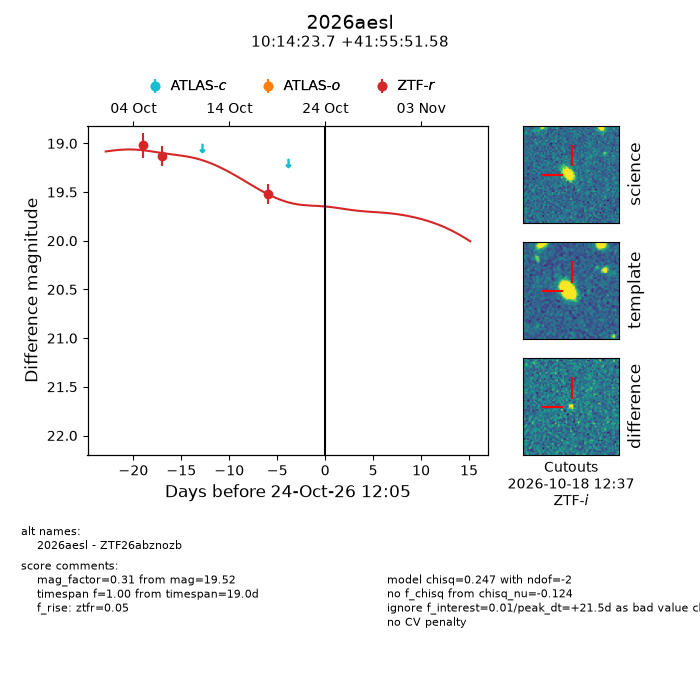
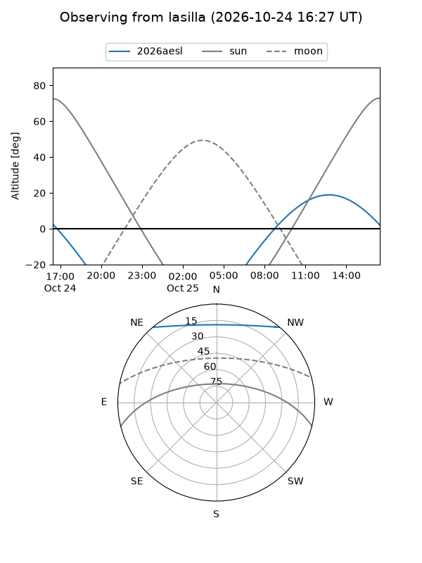
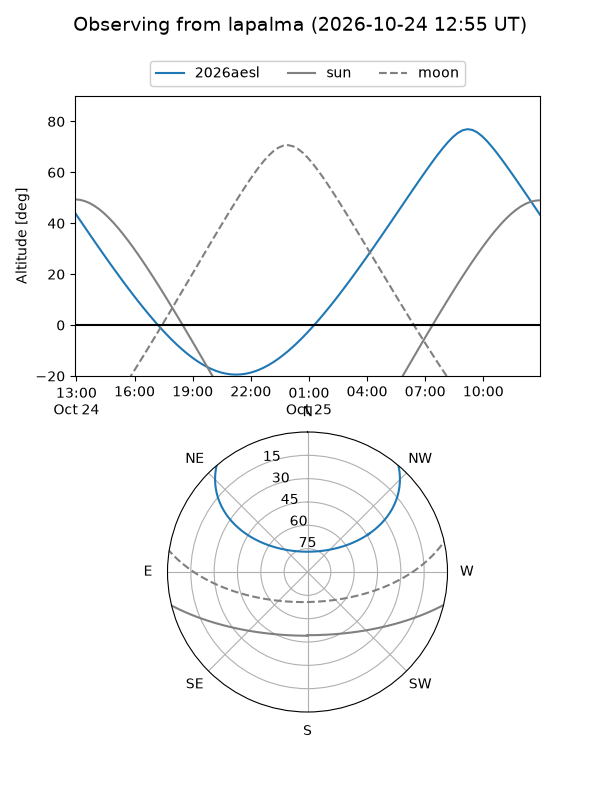
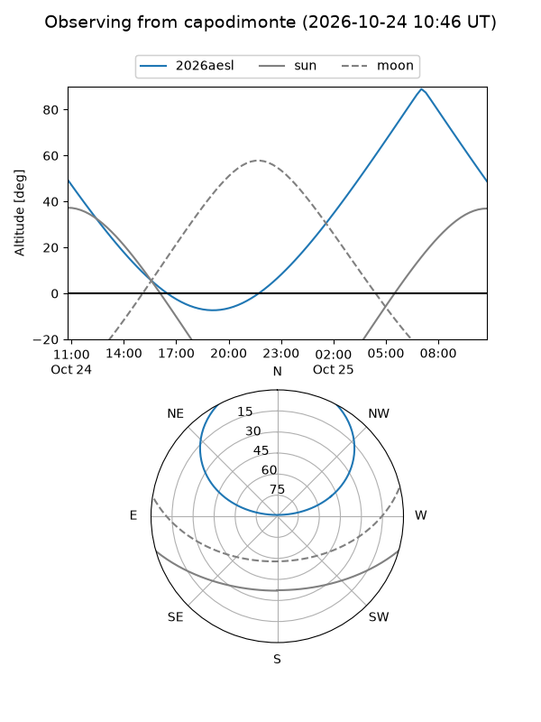
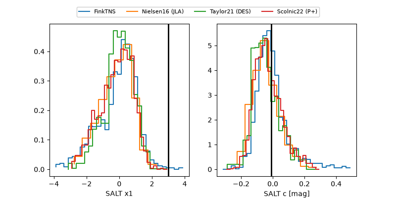

2026aesl
Target 2026aesl at 2026-10-25 00:01
Aliases and brokers:
FINK-ZTF: ztf.fink-portal.org/ZTF26abznozb
Lasair-ZTF: lasair-ztf.lsst.ac.uk/objects/ZTF26abznozb
ALeRCE-ZTF: alerce.online/object/ZTF26abznozb
YSE-PZ: ziggy.ucolick.org/yse/transient_detail/2026aesl
TNS name: wis-tns.org/object/2026aesl
Direct TNS query: direct search
alt names
ZTF26abznozb (ztf,fink_ztf)
2026aesl (tns,yse)
Coordinates:
equatorial (ra, dec) = 153.5988,+41.93100
equatorial (HMS+DMS) = 10:14:23.72,+41:55:51.58
galactic (l, b) = (177.7363,+54.82110)
Flags:
peak dt: +22.0
Photometry:
last ztfr=19.52
3 ztfr detections
Lightcurve

Visibility



Additional plots
